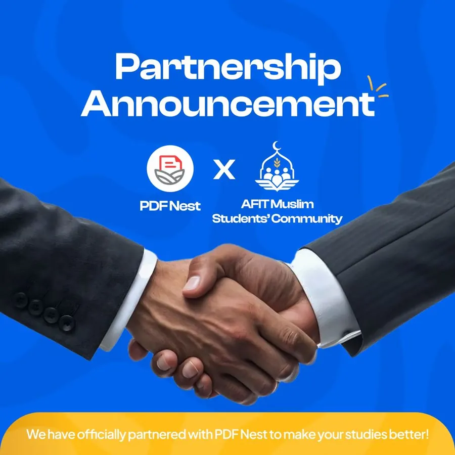

Academics
Tutorials, past questions, scholarship notices and exam support, run by the academics team for every level. Fostering academic excellence in Muslim students.

Official partner
PDFNest Students Hub
Study smarter. Stay informed. Prepare better.
PDFNest Students Hub gives students access to useful academic resources, and a community where they can stay informed and make better academic decisions. Administrators share resources and updates; students take part, vote and stay connected.
- Exam-recommended PDFsStudy materials recommended by students who have actually used and reviewed them.
- Quick pollsTake part in polls and contribute to academic discussions.
- Important updatesStay informed about academic information and announcements.
Revise smart, not hard.
Opens the PDFNest website, where you sign up.
Opens a WhatsApp chat with the PDFNest DCC, who can add you to the group.
The past question bank
Past questions from departments across every level, organised in one shared folder and free for everyone.
It is useful and it is incomplete: it only grows because students send in what they have.
Send in papers
Typed or scanned are both fine. Name each file with the course code, session and semester, for example GET209_2025-26_Rain.pdf, and send it to the academics team.
Scholarships and attestation letters
The academics team shares scholarship openings for Nigerian Muslim students as they appear, with their deadlines. The MSFN scholarship, worth up to ₦120,000 a year for secondary and undergraduate students, is one we have supported members through.
Most scholarship applications ask for a letter of attestation from your Islamic community, and AMSC issues these. Send the General Secretary your full name, department, level and the scholarship you are applying for, and allow a few days.
Before you apply
When exams start
What the academics team runs through exam season.
Revision plan
A shared plan built back from the exam dates, with tutorial slots for the hardest papers.
Group study
Study sessions in an agreed room, with a rota so nobody revises alone late at night.
Past question drills
Timed practice with questions from the past question bank before each paper.
Course clinics
Senior students take your questions on the toughest courses in the days before the exam.
Doing well in your courses is part of the trust you carry
Tutorials, past questions and study groups are open to every Muslim student at AFIT, member or not.